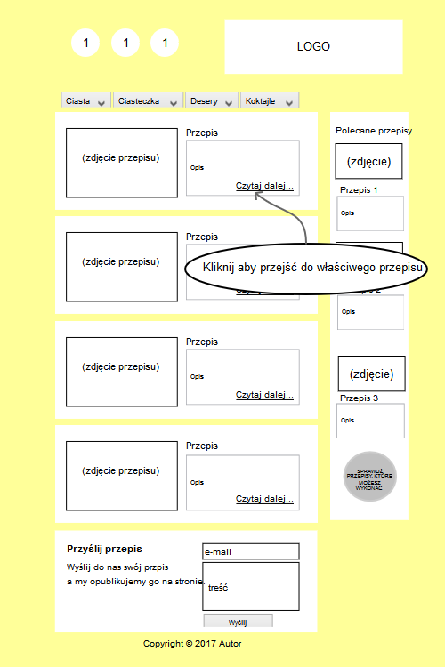

Wybór tematu
Przepisy kulinarne
Rodzaj
Aplikacja webowa
Analiza projektu
Charakterystyka użytkowników
Użytownicy poszukujący sprawdzonych przepisów
Zadania projektu
Aplikacja ma za zadanie zbierać informacje od użytkownika o produktach jakimi w chwili obecnej dysponuje do wykonania określonych przepisów. Po wyborze tych składników aplikacja filtruje bazę i wyświetla możliwe do wykonania przepisy.
Projektowanie
Scenariusz
Po wejściu na stronę w poziomym menu użytkownik ma do wyboru zakładki z kategoriam przepisów. Przykładowo "Ciasta" zostały podzielone na: drożdzowe, biszkoptowe, kruche itd. Po prawej stronie mamy pasek boczny, w którym zostały zamieszczone "Polecane przepisy". W głownej części wystawiony został slider, w któym "przewijane" są najnowsze przepisy. Następnie mamy pole z wyborem składników, którymi użytkownik może dysponować. Ma możliwość zanaczyć odpowiednie produkty w podanych kategoriach. Przyciskiem "Dostępne przepisy" przechodzi do strony z przefiltrowanymi przepisami na podstawie informacji przez niego podanych. Widoczne są tylko poczatkowe informacje co do przepisu i miniaturka zdjęcia. Po kliknieciu "Czytaj dalej..." przechodzimy do właściwego przepisu. Na dole strony mamy także możliwość kontaktu z redaktorami strony, możemy napisać własny przepis, który może zostać opublikowany na stronie.
Storyboard
Widoki aplikacji, kolejno: a. Strona główna b. Baza przepisów c. Konkretny przepis
Budowanie prototypu
Briefing
Aplikacja ma pomagać potenacjalnym użytkownikom w szybkim znalezieniu odpowiadającego im przepisu na podstawie pogrupowania przepisów ze względu na rodzaje ciast, ciasteczek, deseró czy koktajli. Szybkim wybraniu przepisu na podstawie małego formularza o dostępnych dla użytkownika produktach.
Zadania ze scenariusza

Wykonanie zadań
Zadanie 1
Prototypy w programie "Pencil"
Wygląd głównej strony
Wygląd bazy przepisów
Wygląd konkretnego przepisu
Wysyłanie formularza, wybór kategorii
Zaznaczanie produktów
Przejście do przpeisu
Wnioski
Użytkownicy w miarę szybko i sprawnie wykonywali polecone im zadania. Nie zaobserwowałam żadnych większych problemów w zrozumieniu działania interfejsu, więc uważam, że mogę go uznać za w miarę intuicyjny i nieskomplikowany. Każdy popełniony przez użytkownika w czasie wypełniania formularza błąd można było szybko naprawić, co uważam za zaletę.